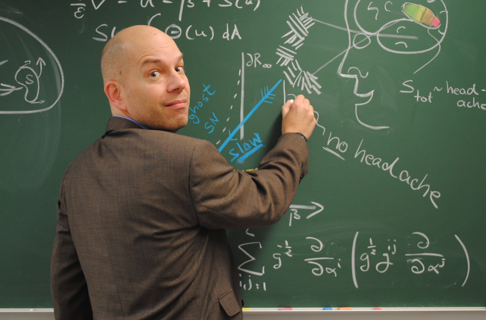
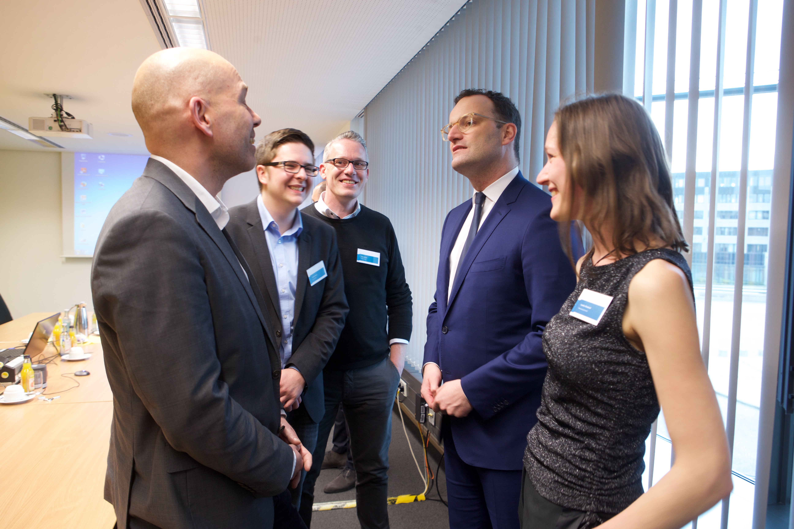

Seit Anfang der 1990er Jahre erforsche ich Migräne. Studiert habe ich Physik. Mein Ziel: mathematische Modelle entwickeln, die im Computer nachvollziehen, was im Migränegehirn geschieht — und sie in klinisch anwendbares Wissen übersetzen.
Discovery und Translation treiben mich an — als Wissenschaftler beziehungsweise als Unternehmer.
Studiert habe ich in Aachen, Göttingen und Magdeburg Physik sowie in Salt Lake City mathematische Biologie. Danach hat mich meine Forschung in unterschiedlichste Fachgebiete verschlagen: ans Max-Planck-Institut für Ernährungsphysiologie in Dortmund, in die Biomedizintechnik an der Universität Campinas (Brasilien), an die Fakultät für Psychologie der Stirling University, an die Universitätsklinik für Neurologie in Magdeburg, ans Mathematical Biosciences Institute der Ohio State University, schließlich als Gastdozent für Dynamische Krankheiten an die TU Berlin und die Humboldt-Universität sowie ans Max-Planck-Institut für Physik komplexer Systeme.

Migräne Aura Stiftung
2003 habe ich mit Dr. med. Klaus Podoll die Migräne Aura Stiftung gegründet. Sie erstellt medizinische Informationen und Materialien, die Migränepatienten helfen, ihre neurologischen Symptome zu erkennen, zu verstehen und mehr Verantwortung für ihre Gesundheit zu übernehmen. Als die Datenschutz-Grundverordnung in Kraft trat, mussten wir die Website vorsorglich offline nehmen — sie wird derzeit vollständig überarbeitet.
Newsenselab & M-sense
Anfang 2016 habe ich mit Stefan Greiner, Simon Scholler und Martin Lysk das Berliner Startup Newsenselab gegründet. Wir entwickelten eine digitale Therapie für Migräne und Kopfschmerzen, die als DiGA M-sense Migräne — eine „App auf Rezept" — im Dezember 2020 zugelassen wurde. Eine klinische Studie zeigte nicht die erwarteten Ergebnisse; Ende 2023 musste ich Insolvenz anmelden. Mein Fazit: in acht großartigen Jahren viel an Erfahrung gewonnen.
